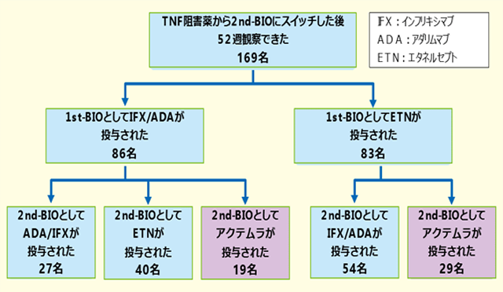
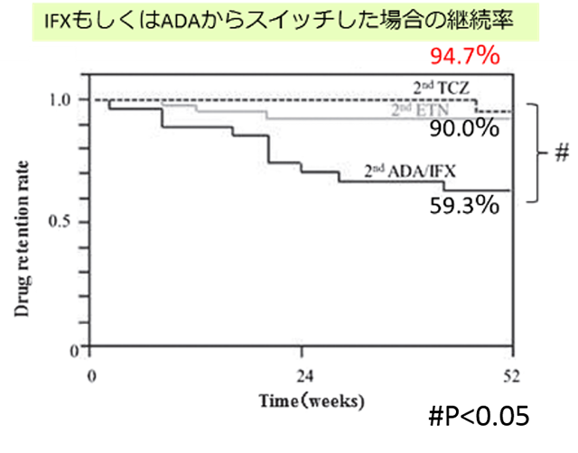
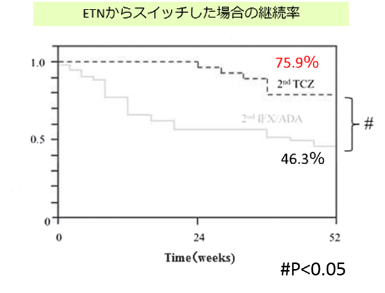

2nd-Bioの継続率はアクテムラが最も高い（TBCR）
- ●Tsurumai Biologics Communication Registry (TBCR)にて、TNF阻害薬からスイッチした際のアクテムラの治療継続率が示された。



2nd BIOとしてのアクテムラの52週後の継続率は、IFX/ADAからのスイッチが94.7％、ETNからのスイッチが75.9％とTNF⇒TNFスイッチ時の継続率よりも有意に高かった。
TNF効果不十分例の2nd-Bioには、ターゲットの異なるアクテムラを使用したほうが高い継続率が期待できる